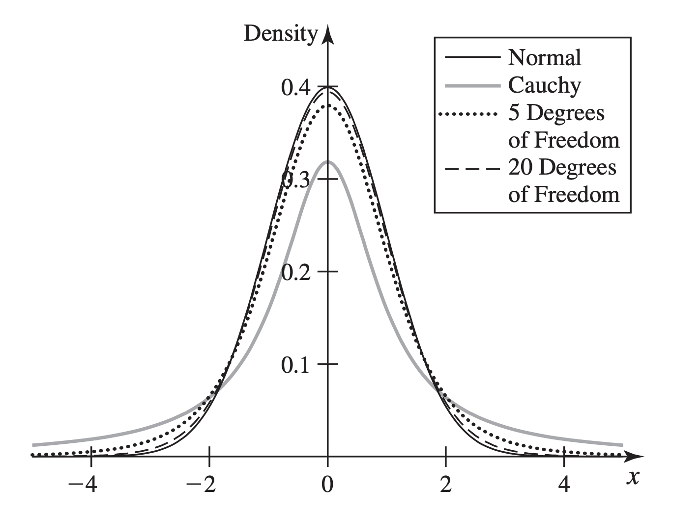
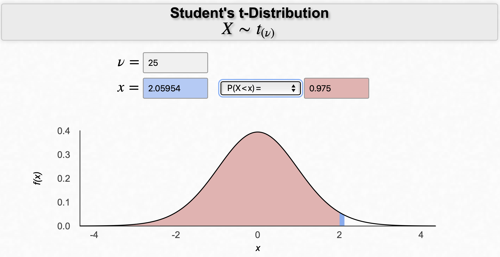
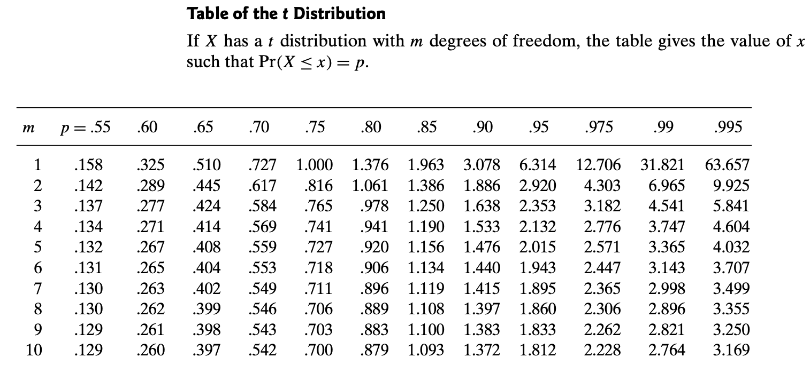

A statistic is a function of some observable random variables, and hence is itself a random variable with a distribution. That distribution is its sampling distribution, and it tells us what values the statistic is likely to assume and how likely it is to assume those values prior to observing our data. When the distribution of the observable data is indexed by a parameter, the sampling distribution is specified as the distribution of the statistic for a given value of the parameter.
Sampling Distribution
Suppose that the random variables \(\vec{X} = (X_1, \dots, X_n)\) form a random sample from a distribution involving a parameter \(\theta\) whose value is unknown. Let \(T\) be a function of \(\vec{X}\) and possibly \(\theta\). That is, \(T = r(X_, \dots, X_n, \theta)\).
The distribution of \(T\) (given \(\theta\)) is called the sampling distribution of \(T\).
Note: Often, the random variable \(T\) in the definition here will not depend on \(\theta\), and hence will be a statistic as defined in Sec 7.1.
Lifetimes of Electronic Components
Consider the company in Example 7.1.1 that sells electronic components.
Observations: \(X_1, \dots, X_n \sim \text{Exp}(\theta)\).
Prior distribution: \(\xi(\theta) \sim \text{Gamma}(1, 2)\).
Posterior distribution: \(\xi(\theta|\vec{X}) \sim \text{Gamma} (1 + 3, 2 + \sum_{i=1}^3 X_i)\) after observing \(n=3\) lifetimes.
Posterior mean:
Prior to observing the three lifetimes, the company may want to know how likely it is that \(\hat{\theta}\) will be close to \(\theta\).
For example, they may want to compute
Sampling Distribution of the M.L.E. of the Mean of a Normal Distribution
A random sample \(X_1, \dots, X_n\) from \(\mathcal{N}(\mu, \sigma^2)\).
We already know that the M.L.E. of the mean:
Also, we know that (from Sec 5.6)
But what about the sample variance?
so what is the distribution of \(\widehat{\sigma^2}\)?
In this chapter, we shall derive, for random samples from a normal distribution, the distribution of the sample variance and the distributions of various functions of the sample mean and the sample variance. These derivations will lead us to the definitions of some new distributions that play important roles in problems of statistical inference.
The family of chi-square (\(\chi^2\)) distributions is a subcollection of the family of gamma distributions. These special gamma distributions arise as sampling distributions of variance estimators based on random samples from a normal distribution.
M.L.E. of the Variance of a Normal Distribution
Suppose a random sample \(X_1, \dots, X_n\) from \(\mathcal{N}(\mu, \sigma^2)\), with known \(\mu\) but unknown \(\sigma^2\).
Find the M.L.E. of the variance.
From Exercise 6 in Sec 7.5, we have
The distribution of \(\widehat{\sigma^2_0}\) and \(\widehat{\sigma^2_0}/\sigma^2\) are useful in several statistical problems, and we will derive them in this section.
Recall that if \(X \sim \text{Gamma} (\alpha, \beta)\):
Also,
Given a positive integer \(m\), the gamma distribution with \(\alpha = m/2, \beta = 1/2\), is called the \(\chi^2\) distribution with \(m\) degrees of freedom.
Then its p.d.f. is
Write \(X \sim \chi^2 (m)\).
We also have
The m.g.f. is
for \(t < 1/2\).
If random variables \(X_1, \dots, X_k\) are independent and \(X_i \sim \chi^2(m_i), \, i = 1, \dots, k\), then
Idea of the proof:
If \(X\sim \mathcal{N}(0,1)\), then \(X^2 \sim \chi^2(1)\).
Want To Show: \(Y = X^2\) has the p.d.f.
We first find the C.D.F. of \(Y\):
Note that
So,
Since \(\Gamma(1/2) = \sqrt{\pi}\) (see Sec 5.7.9 on page 318), we have \(X^2 \sim \chi^2(1)\).
If the random variables \(X_1, \dots, X_m\) are i.i.d. with the standard normal distribution, then the sum of squares \(X_1^2 + \cdots + X_m^2\) has the \(\chi^2\) distribution with \(m\) degrees of freedom.
M.L.E. of the Variance of a Normal Distribution (revisited)
Suppose a random sample \(X_1, \dots, X_n\) from \(\mathcal{N}(\mu, \sigma^2)\), with known \(\mu\) but unknown \(\sigma^2\).
The M.L.E. of the variance:
Note that the random variables
form a random sample from \(\mathcal{N}(0, 1)\).
By Corollary 8.2.1, we know that \(\sum_{i=1}^n Z_i^2\) has the \(\chi^2\) distribution with \(n\) degrees of freedom.
Question: What the relation between \(\widehat{\sigma^2_0}\) and \(\sum_{i=1}^n Z_i^2\)?
In other words, \(n \widehat{\sigma^2_0}/\sigma^2\) has the \(\chi^2\) distribution with \(n\) degrees of freedom.
Suppose that a point \((X, Y, Z)\) is to be chosen at random in three-dimensional space, where \(X\), \(Y\), and \(Z\) are independent random variables and each has the standard normal distribution.
What is the probability that the distance from the origin to the point will be less than 1 unit?-
Distance: \(\sqrt{X^2 + Y^2 + Z^2}\).
Want:
Sketch the p.d.f. of the \(\chi^2\) distribution with \(m=2\) degrees of freedom.
When \(m = 2\), the p.d.f is
Also, we know the mean is \(2\) and the variance is \(4\).
Suppose \(X_1, \dots, X_n\) form a random sample from \(\mathcal{N}(\mu, \sigma^2)\).
Case 1: \(\mu\) known, but \(\sigma^2\) unknown.
The M.L.E. of the variance is
\(n \widehat{\sigma^2_0}/\sigma^2\) has the \(\chi^2\) distribution with \(n\) degrees of freedom.
Case 2: both \(\mu\) and \(\sigma^2\) unknown.
The M.L.E. of the variance is
Question: What is the distribution of \(n \widehat{\sigma^2}/\sigma^2\)?
Suppose that \(X_1, \dots, X_n\) form a random sample from \(\mathcal{N}(\mu, \sigma^2)\). Then the sample mean \(\overline{X}_n\) and the sample variance \(\sum_{i=1}^n (X_i - \overline{X}_n)^2/n\) are independent random variables. Moreover,
Assume \(X_1, \dots, X_{26}\) form a random sample from \(\mathcal{N}(\mu, \sigma^2)\).
Then by Theorem 8.3.1, we know that
From the \(\chi^2\) table in the book (on page 858), we have
It follows that
Interpretation:
There is probability \(0.25\) that \(\widehat{\sigma^2}\) will underestimate \(\sigma^2\) by \(23\) percent or more. That is, (prior to observing the data) it tells us the probability that \(\widehat{\sigma^2}\) would be at least \(23\%\) below \(\sigma^2\).
Determine the smallest possible sample size \(n\) such that
By Theorem 8.3.1, we know that \(\hat{\mu}\) and \(\hat{\sigma}\) are independent, so
where
Question: How to compute \(p_1\) and \(p_2\)?
After some trials, we can find (by the Table) the smallest sample size is \(21\).
When our data are a sample from the normal distribution with mean \(\mu\) and variance \(\sigma^2\), the distribution of \(Z = n^{1/2}(\hat{\mu} - \mu)/\sigma\) is the standard normal distribution, where \(\hat{\mu}\) is the sample mean. If \(\sigma^2\) is unknown, we can replace \(\sigma\) by an estimator (similar to the M.L.E.) in the formula for \(Z\). The resulting random variable has the \(t\) distribution with \(n- 1\) degrees of freedom and is useful for making inferences about \(\mu\) alone even when both \(\mu\) and \(\sigma^2\) are unknown.
Assume two random variables \(Y \sim \chi^2(m)\), and \(Z \sim \mathcal{N}(0, 1)\) are independent. Let
Then the distribution of \(X\) is called the \(t\) distribution with \(m\) degrees of freedom.
The p.d.f. of \(X\) is
(1) As \(m \to \infty\),
So, the \(t\) distribution converges to \(\mathcal{N}(0, 1)\) as \(m \to \infty\).
(2) \(t\) distribution does not have a m.g.f.
In fact, \(t\) distribution can only have first \(m-1\) moments, if its degree of freedom is \(m\).
For example, when \(m = 1\), the p.d.f becomes
This is the Cauchy distribution, and
(3) The p.d.f. of a \(t\) distribution is symmetric.

Suppose that \(X_1, \dots, X_n\) form a random sample from \(\mathcal{N}(\mu, \sigma^2)\).
Then
where \(s_n^2 = \sum_{i=1}^n (X_i - \overline{X}_n)^2\).
Moreover,
and
Question: Any relation between \(U\) and \(Z\)?
Let’s re-write \(U\) as follows:
If we define
Then
Question: Any relation between \(\sigma'\) and \(\sigma\)?
Note that
So we have
(1) \(\mathbb{E}(\sigma')^2 = \sigma^2\), so by Sec 8.7, we say \((\sigma')^2\) is an unbiased estimator of the variance.
(2) When \(n \to \infty\), \((\sigma')^2 \approx \widehat{\sigma^2} \approx \sigma^2\).
Suppose that \(X_1, \dots, X_{17}\) from a random sample of \(\mathcal{N}(\mu, \sigma^2)\) with unknown mean and variance.
Find a value of \(k\) such that
Solution
From the Table on page 860, we have
What is \(k\)? \(k = -\frac{1.746}{4}\).
Confidence intervals provide a method of adding more information to an estimator \(\hat{\theta}\) when we wish to estimate an unknown parameter \(\theta\). We can find an interval \((A, B)\) that we think has high probability of containing \(\theta\). The length of such an interval gives us an idea of how closely we can estimate \(\theta\).
In this section, we mainly focus on the confidence intervals for the mean of a normal distribution.
Assume that \(X_1, \dots, X_n\) form a random sample from \(\mathcal{N}(\mu, \sigma^2)\).
Construct the estimators \(\overline{X}_n\) of \(\mu\) and \(\sigma'\) of \(\sigma\).
From Sec 8.4, we know that
Question: How to make use of \(U\) above to estimate \(\mu\) and also understand how much confidence we should place in the estimator?
First of all, we can compute (using the Table)
Note that
Goal: Given any probability \(\gamma\), to find the value of \(c\) such that
The interval
is called a \(100 \gamma\) percent confidence interval for \(\mu\).
Question: How to find \(c\) given \(n\) and \(\gamma\)?
Let \(T_{n-1}\) denote the C.D.F. of the \(t\) distribution with \(n-1\) degrees of freedom. Then
and thus
That is, \(c\) must be the \((1 + \gamma)/2\) quantile of the \(t\) distribution with \(n-1\) degrees of freedom.
For example, when \(n = 26, \gamma = 0.95\), we have

Then we can state that regardless of the unknown values of \(\mu\) and \(\sigma\), the probability is \(0.95\) that the two random variables
will lie one opposite sides of \(\mu\).
The interval \((A, B)\) here is called a confidence interval.
Let \(X_1, \dots, X_n\) form a random sample from a distribution with \(\theta\) unknown. Let \(A(X_1, \dots, X_n)\) and \(B(X_1, \dots, X_n)\) be two statistics such that
then the random interval \((A, B)\) is called a coefficient \(\gamma\) confidence interval for \(\theta\) or a \(100 \gamma\) percent confidence interval for \(\theta\).
Suppose that a random sample of eight observations is taken from the normal distribution with unknown mean \(\mu\) and unknown variance \(\sigma^2\), and that the observed values are \(3.1, 3.5, 2.6, 3.4, 3.8, 3.0, 2.9\), and \(2.2\).
Find the shortest confidence interval for \(\mu\) with the confidence coefficients \(\gamma= 0.90\).
In this problems, \(n=8\), and \(\gamma = 0.90\), what is \(c\)?

Using the Table, we can find
So with \(90\%\) confidence, the true mean \(\mu\) lies in
If \(\delta(X_1, \dots, X_n)\) is an estimator of a parameter \(\theta\) such that
for every possible value of \(\theta\), we call \(\delta(X_1, \dots, X_n)\) an unbiased estimator of \(\theta\).
Assume \(X_1, \dots, X_n\) is a random sample from a distribution.
By the property of the expectation, we have
In this case, we say the sample mean \(\overline{X}_n\) is an unbiased estimator of \(\mu\).
Further, if we assume that the sample distribution is \(\mathcal{N}(\mu, \sigma^2)\).
We have that
which is the M.L.E. of the variance \(\sigma^2\).
Therefore,
Hence, \(\widehat{\sigma^2}\) is NOT unbiased, or it is biased.
However,
So,
is an unbiased estimator of \(\sigma^2\).